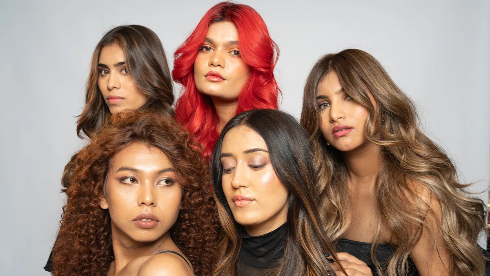

Hair extensions are a popular way to add length, volume, and fullness without waiting for natural hair to grow. However, choosing the right type is important if you want extensions that blend seamlessly with your existing hair. When exploring hair extensions in Vadodara, factors such as hair quality, attachment method, texture, colour matching, and maintenance can influence the final appearance.
The most natural-looking hair extensions are generally those that closely match your natural hair texture, colour, density, and movement. Understanding the different types can help you choose an option that complements your hairstyle and everyday routine.
Hair extensions are additional hair strands or sections attached to natural hair to create extra length, volume, or dimension. They are available in different materials, lengths, textures, and attachment methods.
Depending on your preferences, extensions can provide temporary styling changes or longer-lasting results.
Hair extensions are commonly used to:
The final result depends on selecting extensions that blend naturally with your existing hair.
Different hair extension methods offer different levels of convenience, durability, and styling flexibility. Understanding their characteristics can help you identify which option suits your requirements.
Clip-in extensions are temporary hairpieces attached using small clips. They can be applied and removed at home without permanent changes to natural hair.
Key advantages:
Tape-in extensions use adhesive strips to attach additional hair sections close to the roots. They are designed to lie relatively flat against the scalp, making them suitable for creating a seamless appearance.
Key advantages:
Keratin bond extensions use small sections of additional hair attached to natural hair with keratin-based bonds. The bonds are typically applied using specialised salon equipment.
Key advantages:
Micro-link extensions, also called micro-bead extensions, are attached using small beads or rings that secure additional hair to natural strands.
Key advantages:
Sew-in extensions involve attaching additional hair to braided sections of natural hair using specialised stitching techniques.
Key advantages:
There is no single extension type that looks natural on everyone. The best choice depends on your hair thickness, texture, desired length, and lifestyle.
Here is a general comparison:
For a natural finish, the quality of the extension hair and accuracy of colour matching are just as important as the attachment technique.
Before selecting extensions, consider these important factors.
Match Your Hair Colour
Choose extensions that closely match your natural hair colour, including its undertones. If your hair has multiple shades, a blended or multi-tonal extension can create a more seamless appearance.
Consider Your Hair Texture
Straight, wavy, and curly hair require different extension textures. Matching the natural movement of your hair helps prevent visible differences between your own strands and the extensions.
Choose the Right Length and Volume
Extensions that are significantly longer or thicker than your natural hair may look less natural. Select a length and density that complement your existing haircut.
Consider Hair Quality
Human hair extensions generally offer more natural movement and greater styling flexibility than synthetic alternatives. However, quality varies, so discuss the material and care requirements before purchasing.
Select a Suitable Attachment Method
Your hair thickness, daily activities, styling habits, and maintenance preferences should influence the attachment method. A professional consultation can help determine which option is appropriate.
Proper aftercare helps preserve the appearance and lifespan of hair extensions.
Brush carefully: Use a suitable extension brush and gently detangle from the ends upwards.
Use appropriate hair products: Choose shampoos and conditioners compatible with your extension type.
Avoid excessive heat: Use heat protection when styling heat-compatible extensions.
Protect hair while sleeping: Gently secure long hair to reduce tangling overnight.
Schedule maintenance appointments: Follow your stylist's recommended schedule for adjustments and removal.
Avoid pulling or excessive tension: Handle attachment areas gently to protect natural hair.
Different extension methods have different maintenance requirements. Always follow the care instructions provided by your stylist.
Choosing the right hair extensions involves more than selecting a particular length or colour. Proper consultation, hair assessment, colour matching, and professional application all contribute to a natural-looking result.
At Frenyz Salon in Vadodara, clients can explore professional hair styling and hair transformation services based on their individual preferences.
Before choosing an extension method, discuss your natural hair thickness, desired length, styling routine, and maintenance expectations with your stylist. This helps identify an approach that complements your existing hair.
Hair extensions can transform your hairstyle by adding length, volume, and fullness. Clip-in, tape-in, keratin bond, micro-link, and sew-in extensions each offer different benefits and application methods.
For the most natural finish, prioritise hair quality, accurate colour matching, suitable texture, and professional placement. The right extension method should blend with your natural hair while remaining comfortable and manageable for your lifestyle.
Human hair extensions generally provide more natural movement, texture, and styling flexibility. Synthetic extensions can also look realistic, but their styling options and heat resistance may be more limited.
Hair extensions can contribute to breakage or hair damage if they are installed incorrectly, too heavy, or maintained poorly. Choosing an appropriate method, avoiding excessive tension, and following professional aftercare instructions can help reduce these risks.
Lightweight extensions with suitable placement are generally worth considering for thin hair. Tape-in or carefully selected clip-in extensions may be options, depending on hair density and condition. A professional assessment is recommended before choosing an attachment method.